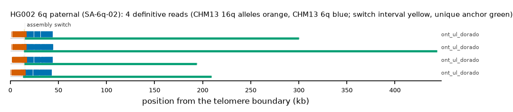

HG002 6q paternal: SA-6q-02
Claim HG002#1#chr6_PATERNAL#R. All claims
- cohort
- HG002 Q100
- individual
- HG002
- haplotype
- paternal
- arm
- 6q
- allele
- SA-6q-02 (foreign)
- model
- donor CHM13 16q, proximal CHM13 6q, recipient CHM13 6q, pattern DP
- claimed end(s)
HG002#1#chr6_PATERNAL#R- assembly switch
- 13,442 bp from the telomere boundary; own-window projection 15180-15275 bp
- v1 verdict
- confirmed (confirmed)
- definitive tier
- definitive
- reads
- 12 conclusive switch-concordant, 0 discordant, 0 contradicting, 158 consistent; 4 definitive (ont_ul_dorado)
- by tier
- definitive:4;conclusive_unique_anchor_off_end:8;consistent:158
- source
- HG002 Q100 v1.1 public read alignments (16 files; 12 independent datasets after molecule de-duplication)

Conclusive and contradicting reads (12)
203 further reads are consistent (switch test passed, but no terminal telomere, anchor or integrity); they are
listed in reads.tsv.gz. Switch: 95% interval in subtelomere coordinates (kb from the
telomere boundary) and projected on CHM13 6q. Each samtools command prints the read's record
from its public file (CRAM: add the CHM13 v2.0 FASTA as -T).
| read | dataset | tier | length | switch (subtelomere, kb) | switch on CHM13 | donor units / purity | proximal units / purity | anchor (CHM13, MAPQ, unique) | own-assembly best end | fetch |
|---|---|---|---|---|---|---|---|---|---|---|
371d8ad9-18e3-4869-9538-2e42c00735e2 | ont_ul_dorado | definitive | 444,030 | 14.2-14.2 | chr6:172117595-172117686 | 85 / 0.94 | 171 / 0.94 | chr6:171671660-172117595, 60, 414.0 kb | HG002#1#chr6_PATERNAL#R (99.0%) ✓ | samtoolssamtools view -F 0x900 -X 'https://human-pangenomics.s3.amazonaws.com/T2T/HG002/assemblies/polishing/HG002/v1.1/mapping/ont_r10_ul_dorado/hg002v1.1_ont_r10_ul_dorado.pri.bam' 'https://human-pangenomics.s3.amazonaws.com/T2T/HG002/assemblies/polishing/HG002/v1.1/mapping/ont_r10_ul_dorado/hg002v1.1_ont_r10_ul_dorado.pri.bam.bai' 'chr6_PATERNAL:174367784-174411882' | awk -v r='371d8ad9-18e3-4869-9538-2e42c00735e2' '$1==r' |
0e5a1416-53f6-4c3e-a35d-a5a17161495f | ont_ul_dorado | definitive | 301,507 | 14.0-14.8 | chr6:172116933-172117698 | 88 / 0.93 | 170 / 0.93 | chr6:171826631-172116933, 60, 259.0 kb | HG002#1#chr6_PATERNAL#R (98.8%) ✓ | samtoolssamtools view -F 0x900 -X 'https://human-pangenomics.s3.amazonaws.com/T2T/HG002/assemblies/polishing/HG002/v1.1/mapping/ont_r10_ul_dorado/hg002v1.1_ont_r10_ul_dorado.pri.bam' 'https://human-pangenomics.s3.amazonaws.com/T2T/HG002/assemblies/polishing/HG002/v1.1/mapping/ont_r10_ul_dorado/hg002v1.1_ont_r10_ul_dorado.pri.bam.bai' 'chr6_PATERNAL:174367784-174411882' | awk -v r='0e5a1416-53f6-4c3e-a35d-a5a17161495f' '$1==r' |
98467e7e-ac5b-4366-a41b-d6906d4dcaf5 | ont_ul_dorado | definitive | 211,060 | 13.1-13.2 | chr6:172117595-172117688 | 81 / 0.91 | 166 / 0.93 | chr6:171917296-172117595, 60, 168.4 kb | HG002#1#chr6_PATERNAL#R (94.9%) ✓ | samtoolssamtools view -F 0x900 -X 'https://human-pangenomics.s3.amazonaws.com/T2T/HG002/assemblies/polishing/HG002/v1.1/mapping/ont_r10_ul_dorado/hg002v1.1_ont_r10_ul_dorado.pri.bam' 'https://human-pangenomics.s3.amazonaws.com/T2T/HG002/assemblies/polishing/HG002/v1.1/mapping/ont_r10_ul_dorado/hg002v1.1_ont_r10_ul_dorado.pri.bam.bai' 'chr6_PATERNAL:174367784-174411882' | awk -v r='98467e7e-ac5b-4366-a41b-d6906d4dcaf5' '$1==r' |
50db752c-40da-4ee0-a29c-99f7edc9ccc6 | ont_ul_dorado | definitive | 195,332 | 14.2-14.3 | chr6:172117595-172117685 | 86 / 0.94 | 166 / 0.94 | chr6:171933650-172117595, 60, 152.0 kb | HG002#1#chr6_PATERNAL#R (96.3%) ✓ | samtoolssamtools view -F 0x900 -X 'https://human-pangenomics.s3.amazonaws.com/T2T/HG002/assemblies/polishing/HG002/v1.1/mapping/ont_r10_ul_dorado/hg002v1.1_ont_r10_ul_dorado.pri.bam' 'https://human-pangenomics.s3.amazonaws.com/T2T/HG002/assemblies/polishing/HG002/v1.1/mapping/ont_r10_ul_dorado/hg002v1.1_ont_r10_ul_dorado.pri.bam.bai' 'chr6_PATERNAL:174367784-174411882' | awk -v r='50db752c-40da-4ee0-a29c-99f7edc9ccc6' '$1==r' |
f2779d8d-ec8b-484b-8b6d-c9a5e2833d7e | ont_ul_dorado | conclusive, places on another end | 233,345 | 14.1-14.2 | chr6:172117595-172117690 | 87 / 0.93 | 170 / 0.94 | chr6:171896132-172117595, 60, 189.5 kb | HG002#2#chr6_MATERNAL#R (98.6%) (not claimed end) | samtoolssamtools view -F 0x900 -X 'https://human-pangenomics.s3.amazonaws.com/T2T/HG002/assemblies/polishing/HG002/v1.1/mapping/ont_r10_ul_dorado/hg002v1.1_ont_r10_ul_dorado.pri.bam' 'https://human-pangenomics.s3.amazonaws.com/T2T/HG002/assemblies/polishing/HG002/v1.1/mapping/ont_r10_ul_dorado/hg002v1.1_ont_r10_ul_dorado.pri.bam.bai' 'chr6_PATERNAL:174367784-174411882' | awk -v r='f2779d8d-ec8b-484b-8b6d-c9a5e2833d7e' '$1==r' |
26de27f8-a6f2-4e55-ae61-cbecfdeb18cc | ont_ul_dorado | conclusive, places on another end | 230,747 | 14.2-14.9 | chr6:172116933-172117692 | 85 / 0.93 | 169 / 0.93 | chr6:171898602-172116933, 60, 187.1 kb | HG002#2#chr6_MATERNAL#R (98.3%) (not claimed end) | samtoolssamtools view -F 0x900 -X 'https://human-pangenomics.s3.amazonaws.com/T2T/HG002/assemblies/polishing/HG002/v1.1/mapping/ont_r10_ul_dorado/hg002v1.1_ont_r10_ul_dorado.pri.bam' 'https://human-pangenomics.s3.amazonaws.com/T2T/HG002/assemblies/polishing/HG002/v1.1/mapping/ont_r10_ul_dorado/hg002v1.1_ont_r10_ul_dorado.pri.bam.bai' 'chr6_PATERNAL:174367784-174411882' | awk -v r='26de27f8-a6f2-4e55-ae61-cbecfdeb18cc' '$1==r' |
d1250b23-ba09-43d8-b982-cdb3270d6714 | ont_ul_dorado | conclusive, places on another end | 200,193 | 13.3-13.5 | chr6:172117487-172117684 | 79 / 0.91 | 154 / 0.94 | chr6:171928103-172117487, 60, 157.6 kb | HG002#2#chr6_MATERNAL#R (88.5%) (not claimed end) | samtoolssamtools view -F 0x900 -X 'https://human-pangenomics.s3.amazonaws.com/T2T/HG002/assemblies/polishing/HG002/v1.1/mapping/ont_r10_ul_dorado/hg002v1.1_ont_r10_ul_dorado.pri.bam' 'https://human-pangenomics.s3.amazonaws.com/T2T/HG002/assemblies/polishing/HG002/v1.1/mapping/ont_r10_ul_dorado/hg002v1.1_ont_r10_ul_dorado.pri.bam.bai' 'chr6_PATERNAL:174367784-174411882' | awk -v r='d1250b23-ba09-43d8-b982-cdb3270d6714' '$1==r' |
608df434-e541-409c-8a6b-c10d5cb167cb | ont_ul_dorado | conclusive, places on another end | 182,857 | 14.1-14.2 | chr6:172117595-172117690 | 86 / 0.93 | 170 / 0.94 | chr6:171946507-172117595, 60, 139.2 kb | HG002#2#chr6_MATERNAL#R (98.7%) (not claimed end) | samtoolssamtools view -F 0x900 -X 'https://human-pangenomics.s3.amazonaws.com/T2T/HG002/assemblies/polishing/HG002/v1.1/mapping/ont_r10_ul_dorado/hg002v1.1_ont_r10_ul_dorado.pri.bam' 'https://human-pangenomics.s3.amazonaws.com/T2T/HG002/assemblies/polishing/HG002/v1.1/mapping/ont_r10_ul_dorado/hg002v1.1_ont_r10_ul_dorado.pri.bam.bai' 'chr6_PATERNAL:174367784-174411882' | awk -v r='608df434-e541-409c-8a6b-c10d5cb167cb' '$1==r' |
553715c7-1271-4eb3-bbda-8a8304de9000 | ont_ul_dorado | conclusive, places on another end | 174,615 | 13.1-13.2 | chr6:172117595-172117689 | 80 / 0.91 | 161 / 0.94 | chr6:171952830-172117595, 60, 132.8 kb | HG002#2#chr6_MATERNAL#R (91.7%) (not claimed end) | samtoolssamtools view -F 0x900 -X 'https://human-pangenomics.s3.amazonaws.com/T2T/HG002/assemblies/polishing/HG002/v1.1/mapping/ont_r10_ul_dorado/hg002v1.1_ont_r10_ul_dorado.pri.bam' 'https://human-pangenomics.s3.amazonaws.com/T2T/HG002/assemblies/polishing/HG002/v1.1/mapping/ont_r10_ul_dorado/hg002v1.1_ont_r10_ul_dorado.pri.bam.bai' 'chr6_PATERNAL:174367784-174411882' | awk -v r='553715c7-1271-4eb3-bbda-8a8304de9000' '$1==r' |
75110222-bfb0-4666-8b6e-4b7402f263dd | ont_ul_dorado | conclusive, places on another end | 175,610 | 13.5-13.6 | chr6:172117595-172117690 | 88 / 0.93 | 168 / 0.94 | chr6:171953576-172117595, 60, 132.1 kb | HG002#2#chr6_MATERNAL#R (97.1%) (not claimed end) | samtoolssamtools view -F 0x900 -X 'https://human-pangenomics.s3.amazonaws.com/T2T/HG002/assemblies/polishing/HG002/v1.1/mapping/ont_r10_ul_dorado/hg002v1.1_ont_r10_ul_dorado.pri.bam' 'https://human-pangenomics.s3.amazonaws.com/T2T/HG002/assemblies/polishing/HG002/v1.1/mapping/ont_r10_ul_dorado/hg002v1.1_ont_r10_ul_dorado.pri.bam.bai' 'chr6_PATERNAL:174367784-174411882' | awk -v r='75110222-bfb0-4666-8b6e-4b7402f263dd' '$1==r' |
66c8f385-e8b2-470f-ad9d-93c19ec65534 | ont_ul_dorado | conclusive, places on another end | 182,479 | 13.2-13.3 | chr6:172117595-172117690 | 87 / 0.93 | 170 / 0.93 | chr6:171973091-172117595, 60, 112.6 kb | HG002#2#chr6_MATERNAL#R (98.2%) (not claimed end) | samtoolssamtools view -F 0x900 -X 'https://human-pangenomics.s3.amazonaws.com/T2T/HG002/assemblies/polishing/HG002/v1.1/mapping/ont_r10_ul_dorado/hg002v1.1_ont_r10_ul_dorado.pri.bam' 'https://human-pangenomics.s3.amazonaws.com/T2T/HG002/assemblies/polishing/HG002/v1.1/mapping/ont_r10_ul_dorado/hg002v1.1_ont_r10_ul_dorado.pri.bam.bai' 'chr6_PATERNAL:174367784-174411882' | awk -v r='66c8f385-e8b2-470f-ad9d-93c19ec65534' '$1==r' |
47269f57-25cd-44c9-b727-4260c92be54e | ont_ul_dorado | conclusive, places on another end | 153,443 | 13.5-13.6 | chr6:172117595-172117690 | 88 / 0.93 | 166 / 0.94 | chr6:171974635-172117595, 60, 111.0 kb | HG002#2#chr6_MATERNAL#R (97.9%) (not claimed end) | samtoolssamtools view -F 0x900 -X 'https://human-pangenomics.s3.amazonaws.com/T2T/HG002/assemblies/polishing/HG002/v1.1/mapping/ont_r10_ul_dorado/hg002v1.1_ont_r10_ul_dorado.pri.bam' 'https://human-pangenomics.s3.amazonaws.com/T2T/HG002/assemblies/polishing/HG002/v1.1/mapping/ont_r10_ul_dorado/hg002v1.1_ont_r10_ul_dorado.pri.bam.bai' 'chr6_PATERNAL:174367784-174411882' | awk -v r='47269f57-25cd-44c9-b727-4260c92be54e' '$1==r' |
Files
CRAM/BAM on CHM13 v2.0, BAM on the person's own assembly windows and the window FASTA: release asset subtel_read_evidence_v1_HG002_Q100.tar.gz, directory read_evidence_v1/HG002_Q100/HG002_1_chr6_PATERNAL_R/ (downloads).
Re-derive this verdict
git clone https://github.com/jlanej/human-subtelomere-atlas && cd human-subtelomere-atlas
evidence/replicate_claim.sh 'HG002#1#chr6_PATERNAL#R'The script fetches the cited reads from the public source by region and read ID, re-runs the frozen criteria and compares every per-read and claim verdict with this page (details).